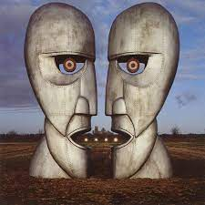
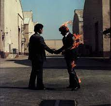

Pink Floyd
15k followers
English Band
Pink Floyd are an English rock band formed in London in 1965. Gaining an early following as one of
the
first British psychedelic groups, they were distinguished by their extended compositions, sonic
experimentation, philosophical lyrics and elaborate live shows. They became a leading band of the
progressive rock genre, cited by some as the greatest progressive rock band of all time.
01

High Hopes
The Division Bell
02

Wish you were here
Wish You were here
03
Comfortably Numb
The Wall
04
High Hopes
The Division Bell
05
Wish you were here
Wish You were here
06
Comfortably Numb
The Wall